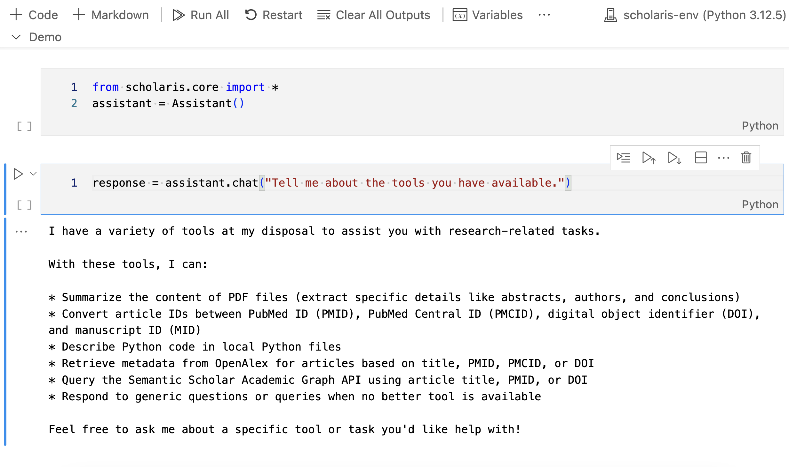
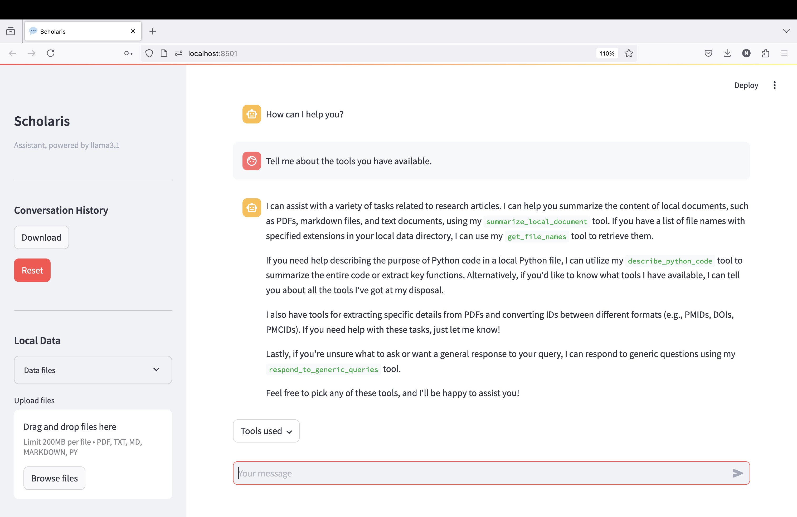

from scholaris.core import *User Interfaces
Scholaris has primarily been developed to work in a Jupyter notebook environment, utilizing a code-first approach. The higher-level
Assistant class and its methods are user-friendly and can be seamlessly integrated with Python’s built-in functions. However, if you prefer a web-browser-based application with a graphical user interface to interact with LLMs and utilize the tools available through Scholaris, you can use the Streamlit app as described below.
Working in a Jupyter notebook environment

assistant = Assistant()Loaded Semantic Scholar API key from the environment variables.
Loaded email address from the environment variables.
A local directory /Users/user2/GitHub/scholaris/data already exists for storing data files. No of files: 1
assistant.chat("Tell me about your tools")I can assist with a variety of tasks, including:
* Extracting text from PDF files
* Retrieving titles and first authors of research articles
* Summarizing local documents (PDF, markdown, or text)
* Describing Python code in local files
* Converting IDs (PMIDs, PMCIDs, DOIs) using the id_converter_tool
* Querying OpenAlex API for article metadata based on title, PMID, PMCID, or DOI
* Querying Semantic Scholar Academic Graph API for article metadata based on title, PMID, or DOI
Please let me know how I can assist you with any of these capabilities!'I can assist with a variety of tasks, including:\n\n* Extracting text from PDF files\n* Retrieving titles and first authors of research articles\n* Summarizing local documents (PDF, markdown, or text)\n* Describing Python code in local files\n* Converting IDs (PMIDs, PMCIDs, DOIs) using the id_converter_tool\n* Querying OpenAlex API for article metadata based on title, PMID, PMCID, or DOI\n* Querying Semantic Scholar Academic Graph API for article metadata based on title, PMID, or DOI\n\nPlease let me know how I can assist you with any of these capabilities!'
Tip
To list the files in the local data directory that has been created at initialization, simply use the Python built-in os module. Pass the assistant’s data_dir attribute as an argument to the os.listdir() function, like so:
import os
os.listdir(assistant.dir_path)You can alos use Python’s built-in functions to copy files from a designated source (e.g., Downloads) to the local data directory that was created at initialization. For example, to copy a file named example.md from the Downloads directory to the local data directory, use the following code:
import shutil
shutil.copy(os.path.expanduser('~/Downloads/example.md'), assistant.dir_path)Likewise, to remove a file from the local data directory, use the following code:
os.remove(os.path.join(assistant.dir_path, 'example.md'))Use the assistant with Streamlit

To use the assistant with Streamlit, you need to install the Streamlit package.
Note
Remember to set up a virtual environment for your project before installing Streamlit. This will help you avoid conflicts with other packages that you may have installed in your base environment.
You can install Streamlit using pip:
pip install streamlitThen, download the ui.py file from the scholaris directory in the Scholaris repository. Run the following command in the terminal to download the file to your current working directory:
wget https://raw.githubusercontent.com/nicomarr/scholaris/main/ui.pyIf wget is not installed on your local computer, you may also use curl, like so:
curl -O https://raw.githubusercontent.com/nicomarr/scholaris/main/ui.pyTo run the streamlit app, activate the virtual environment. Then, go to the directory where the ui.py file is located and run the following command in the terminal:
streamlit run ui.pyThis will start the local server and the app will be accessible in your local network via a web browser. Alternatively, you can run the command in the terminal with an additional flag so that the app will only be accessible from your local computer:
streamlit run ui.py --browser.serverAddress localhost
Note
If you don’t want to download the ui.py file from Github, you can also copy the code block from below and paste it into a new Python file in your working directory. Then run it using the command streamlit run <filename>.py.
Code
from scholaris.core import *
import streamlit as st
import ollama
from datetime import datetime
import json
import os
from pathlib import Path
def download_conversation_history():
now = datetime.now().strftime("%Y-%m-%d_%Hh%Mm%Ss")
conversation_history = st.session_state.assistant.messages
filename = f"conversation_history_{now}.json"
return json.dumps(conversation_history, indent=2), filename
def show_local_data(dir_path: Path) -> None:
try:
for file in dir_path.iterdir():
st.write(f"{file.name}")
except Exception as e:
st.write(f"Error: {e}")
def handle_file_uploads(uploaded_files):
dir_path = st.session_state.assistant.dir_path
if not dir_path.exists():
return
for uploaded_file in uploaded_files:
file_path = st.session_state.assistant.dir_path / uploaded_file.name
if file_path.exists():
continue
try:
with open(file_path, "wb") as f:
f.write(uploaded_file.getbuffer())
if "uploaded_files" not in st.session_state:
st.session_state["uploaded_files"] = []
st.session_state["uploaded_files"].append(file_path)
except Exception as e:
error_placeholder = st.empty()
error_placeholder.error(f"Error saving {uploaded_file.name}: {str(e)}")
time.sleep(1) # Display error for 1 second
error_placeholder.empty()
uploaded_files = []
def delete_uploaded_files():
if "uploaded_files" in st.session_state and st.session_state["uploaded_files"] != []:
file_count = 0
for file_path in st.session_state["uploaded_files"]:
try:
os.remove(file_path)
file_count += 1
except Exception as e:
error_placeholder = st.empty()
error_placeholder.error(f"Error deleting {file_path}: {str(e)}")
time.sleep(1) # Display error for 1 seconds
error_placeholder.empty()
st.write(f"{file_count} file(s) deleted.")
st.session_state.uploaded_files = []
def get_last_tool_names(messages):
"""Returns the tool names from the most recent tool call in the messages."""
tool_names = []
for message in reversed(messages):
if message["role"] == "assistant" and "tool_calls" in message:
for fn in message["tool_calls"]:
name = fn["function"].get("name")
if name:
tool_names.append(name)
break # Exit the loop after the first occurrence
return ", ".join(tool_names) if tool_names else "No tools used."
# Page configuration
st.set_page_config(
page_title="Scholaris",
page_icon=":speech_balloon:",
layout="wide",
initial_sidebar_state="collapsed",
menu_items={
"About": "This is a graphical user interface for Scholaris, a conversational AI assistant for academic research.",
"Get Help": "https://github.com/nicomarr/scholaris/blob/main/nbs/02_ui.ipynb",
"Report a Bug": "https://github.com/nicomarr/scholaris/issues/new"
}
)
# Initialize the assistant if not already in session state
if "assistant" not in st.session_state:
try:
st.session_state.assistant = Assistant(model="llama3.1", dir_path="./data")
except Exception as e:
if "[Errno 61] Connection refused" in str(e):
st.error(f"""An error occurred: {e}. Please make sure Ollama is installed on your local computer and the server is running.
For troubleshooting, refer to the Ollama docs of GitHub:
[README](https://github.com/ollama/ollama/blob/main/docs/README.md)
[FAQ](https://github.com/ollama/ollama/blob/main/docs/faq.md).
""")
else:
st.error(f"An error occurred: {e}")
st.stop()
# Initialize other session state variables
if "uploaded_files" not in st.session_state:
st.session_state.uploaded_files = []
# Start conversation
if len(st.session_state.assistant.messages) < 2: # <2 because the assistant is initialized with a system message
st.session_state.assistant.messages.append({"role": "assistant", "content": "How can I help you?"})
if st.session_state.assistant:
with st.sidebar:
# Set up the sidebar
st.title("Scholaris")
st.caption(str(st.session_state.assistant))
# Conversation History Section
st.write("---")
st.subheader("Conversation History")
st.download_button(label="Download",
help="Download the conversation history as a JSON file.",
data=download_conversation_history()[0],
file_name=download_conversation_history()[1],
mime="text")
if st.button(label="Reset", type="primary",
help="Click to restart the conversation.",
key="reset_messages"):
st.session_state.assistant.clear_conversation_history()
st.session_state.assistant.messages.append({"role": "assistant", "content": "How can I help you?"})
st.write("Conversation history cleared!")
# st.rerun() # Rerun the script to update the chat interface and the sidebar
# Local Data Section
st.write("---")
st.subheader("Local Data")
dir_path = st.session_state.assistant.dir_path
with st.expander("Data files"):
show_local_data(dir_path)
# File Upload Section
uploaded_files = st.file_uploader(
label="Upload files",
type=['pdf','txt','md','markdown','py'],
accept_multiple_files=True,
)
if uploaded_files:
handle_file_uploads(uploaded_files)
# Delete Uploaded Files Section
if st.session_state.uploaded_files:
if st.button(
label="Delete uploaded files",
type="primary",
help="Only uploaded files will be deleted. Already existing files will not be deleted.",
key="delete_data_files"
):
delete_uploaded_files()
st.write("---")
st.write("Source code available on [GitHub](https://github.com/nicomarr/scholaris/blob/main/scholaris/ui.py)")
# Main Chat Interface
for msg in st.session_state.assistant.messages: # Display chat messages from history on app rerun
if msg["role"] == "system" or msg["role"] == "tool": # Skip system message and tool returns
continue
elif msg["role"] == "assistant" and "content" not in msg: # Skip tool calls where no content is returned
continue
with st.chat_message(msg["role"]):
st.markdown(msg["content"])
if prompt := st.chat_input(): # Await user input
with st.chat_message("user"): # Display user message in chat message container
st.markdown(prompt)
with st.spinner("Thinking...") as status: # Display status while assistant is processing
with st.chat_message("assistant"):
stream = st.session_state.assistant.chat(prompt=prompt, redirect_output=True)
try:
if stream:
response = st.write_stream(stream)
else:
st.markdown("I'm sorry, I am unable to respond to that query.")
except Exception as e:
st.error(f"An error occurred: {e}")
with st.popover("Tools used"):
st.markdown(get_last_tool_names(st.session_state.assistant.messages))